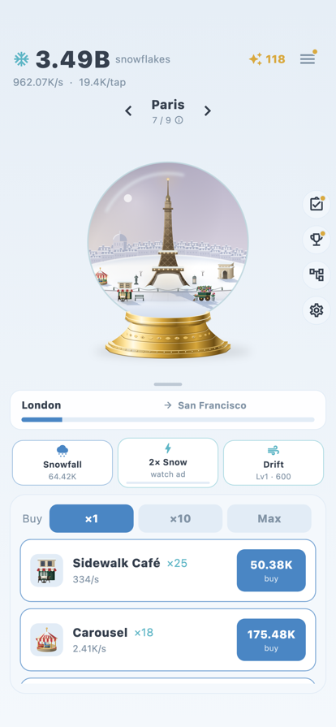
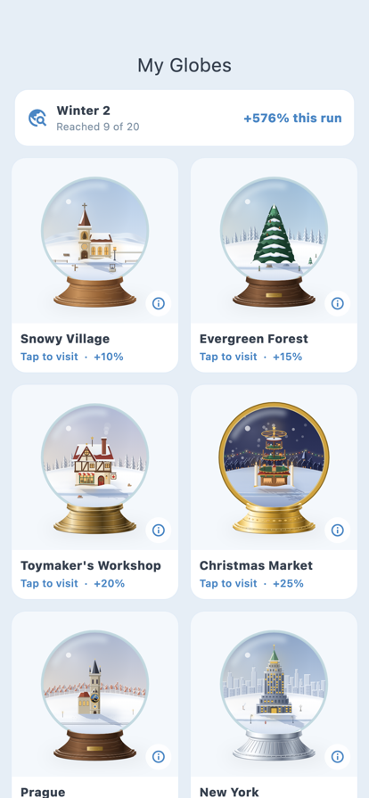
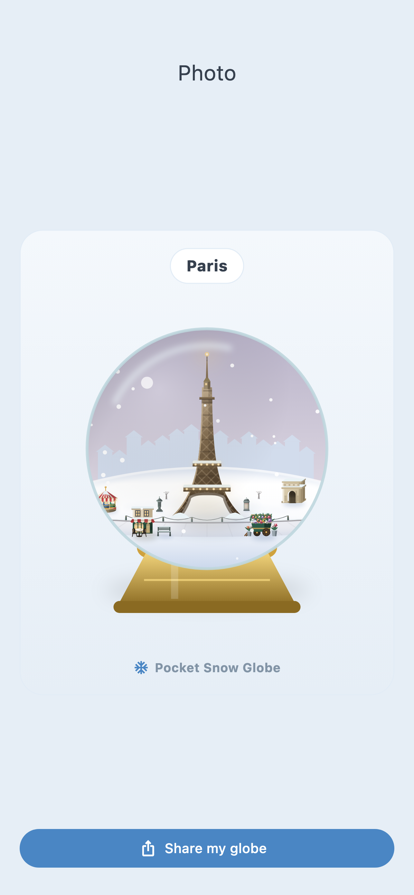

Pocket Snow Globe
An idle game for iPhone and iPad
Tap the globe to make it snow and collect snowflakes. Spend them on pieces for the scene inside: a red tram in Prague, a ramen cart in Tokyo, a carousel in Paris. Fill a globe to unlock the next one, twenty in all.



The globes
The first globes are holiday scenes, like a toymaker's workshop and a Christmas market at night. After those come real cities, starting with Prague, New York and Paris, and further on, a few places that only exist in legend.
Each globe has four pieces of its own. They appear in the scene when you buy them and grow as you buy more. All of the art is drawn in code, and you can save a picture of any globe to share.
How it plays
- Tap the globe to collect snowflakes. Once you buy Drift, you can hold it instead.
- Pieces make snowflakes on their own, including for up to two hours while the app is closed.
- When a globe's bar fills, advance to the next one. Each globe you reach adds a snowfall bonus for the rest of the winter.
- When progress slows, start a New Winter. You go back to the first globe and earn holiday spirit to spend on permanent upgrades in the Workshop.
- There are daily and weekly quests, achievements and a daily reward.
Ads and the one purchase
There are no banner ads and no ads that play on their own. Three buttons offer an optional ad: 2× snowfall for 30 minutes, triple the snowflakes collected while you were away, and double the holiday spirit from a New Winter.
The Golden Snow Shaker is the only purchase. It doubles your snowfall permanently and replaces the 2× Snow ad.
Your save and settings
Your progress backs up to your own iCloud account. There is no sign-in, and a new device on the same Apple ID picks up where you left off.
Reduce motion stops the falling snow. You can also set the globe to snow all the time, light or heavy, instead of following your taps, and switch to dark mode.
iPhone and iPad. Free, with one optional purchase.